Midterm E-Portfolio Compilation
Developer: Lance Nathan Debelen
Course: Object-Oriented Programming
School/Section: Polytechnic University of the Philippines (PUP), IT 2-2N
This e-portfolio presents my Midterm Project in Object-Oriented Programming. It includes quizzes, activities, and exams that demonstrate my understanding of core OOP concepts like Encapsulation, Inheritance, and Polymorphism.
Below are my completed midterm quizzes demonstrating understanding of OOP fundamentals:
Format: Conducted in person (Face-to-Face)
Reflection:
Conducted in person, this foundational assessment evaluated my grasp of essential Java principles. The exam covered the language's history and basic syntax structure, while testing my practical ability to utilize programming operators and implement control flow logic to manage code execution.
Seatwork assignments demonstrating practical application of OOP concepts:
Activity: Code tracing exercise involving variable state tracking and operator evaluation.
Reflection:
This activity focused on the mechanics of code tracing. By manually tracking variable states through complex sequences of arithmetic and relational operators, I strengthened my ability to predict program outputs and debug logical flows.
Activity: Build a program to grade student scores using control flow structures.
Reflection:
Building the Student Grader taught me how to optimize my control flow architecture. I learned that while if-else statements are necessary for evaluating boolean ranges (e.g., checking if a score falls between 85 and 90), switch statements offer a much cleaner, more readable syntax when handling exact matching cases. Learning when to implement each structure significantly reduced the complexity of my code.
This program processes and analyzes student ages, demonstrating my ability to use Java operators, variables, and conditional logic within an object-oriented structure.
import java.util.Scanner;
public class StudentAgeAnalyzerDeBelen {
static String name;
static int age;
static String category;
// input (age and name)
public static void input() {
Scanner input = new Scanner(System.in);
System.out.print("Name: ");
name = input.nextLine();
System.out.print("Age: ");
age = input.nextInt();
System.out.println();
input.close();
}
// process (processing and validating age range)
public static String cat(int age) {
if (age >= 0 && age <= 12) {
return "child";
}
else if (age >= 13 && age <= 19) {
return "Teenager";
}
else if (age >= 20 && age <= 59) {
return "Adult";
}
else if (age >= 60 && age <= 100) {
return "Senior Citizen";
}
else {
return "invalid";
}
}
// output (printing the result if valid)
public static void print() {
System.out.println("Name: " + name);
System.out.println("Age: " + age);
System.out.println("Category " + category);
}
// main method
public static void main(String[] args) {
// input
input();
// process
category = cat(age);
// output
System.out.println("+--- RESULTS ---+");
if (!category.equals("invalid")) {
print();
}
else {
System.out.println("Invalid age input");
}
}
}
Handwritten Notes:
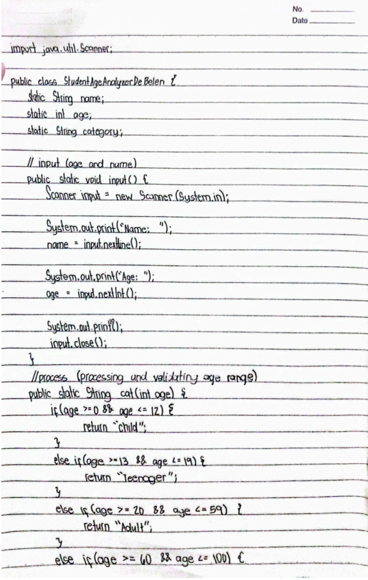
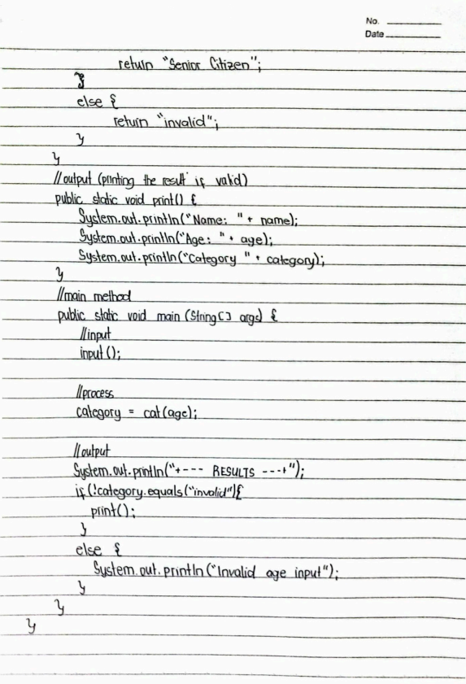
Reflection:
Building this age analyzer was great practice for using if-else statements. I learned how to split my code into different methods for input, processing, and output to keep things clean and easy to read.
Java programs demonstrating core OOP concepts including encapsulation, inheritance, and polymorphism:
A comprehensive analysis of Java variable references and memory management, tracing variable states through stack and heap allocation.
public class Student {
static String school = "PUP Quezon City";
String name;
int grade;
public void display() {
double gwa = 1.75;
System.out.println(name + " " + grade + " " + gwa + " " + school);
}
public static void main(String[] args) {
Student s1 = new Student();
Student s2 = new Student();
s1.name = "Ana";
s1.grade = 90;
s2 = s1;
s2.name = "Mark";
school = "PUP - Sta. Mesa";
s1 = null;
s2.display();
}
}
Handwritten Analysis & Answers:
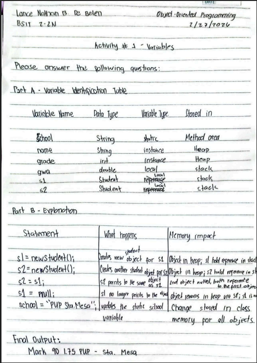
Reflection:
This activity was a huge lightbulb moment for understanding Java memory. Tracing where variables actually live—like references in the Stack and the actual objects in the Heap—made total sense of what happens when we point two variables to the same object or set one to null.
A comprehensive program demonstrating bitwise, ternary, assignment, arithmetic, relational, logical, and unary operators in Java with dynamic computation.
public class OperatorsActivity2 {
public static void main(String[] args) {
// 1. Bitwise Operators
// Required Output: false, 12, true, 13
boolean b1 = false & true;
int i1 = 8 | 4;
boolean b2 = true | false;
int i2 = 9 ^ 4;
System.out.println(b1 + ", " + i1 + ", " + b2 + ", " + i2);
// 2. Ternary Operator
// Required Output: false, true, 10, 15
boolean t1 = (5 > 10) ? true : false;
boolean t2 = (10 == 10) ? true : false;
int t3 = (50 < 100) ? 10 : 0;
int t4 = (20 > 5) ? 15 : 0;
System.out.println(t1 + ", " + t2 + ", " + t3 + ", " + t4);
// 3. Assignment Operators
// Required Output: Addition: 86, Subtraction: 104, Multiplication: 200, Division: 25
int add = 80; add += 6;
int sub = 110; sub -= 6;
int mul = 100; mul *= 2;
int div = 100; div /= 4;
System.out.println("Addition: " + add + ", Subtraction: " + sub +
", Multiplication: " + mul + ", Division: " + div);
// 4. Arithmetic, Relational, Logical, Unary
// Required Output: TRUE, TRUE, FALSE, 20, FALSE, FALSE, TRUE, 60
boolean m1 = (10 + 10 == 20) && (5 < 10);
boolean m2 = !(5 == 10);
boolean m3 = (10 * 2 < 15) || (5 > 10);
int m4 = 19; m4++;
boolean m5 = (m4 == 100);
boolean m6 = false && true;
boolean m7 = (50 / 2 == 25) || false;
int m8 = 65; m8 -= 5;
System.out.println(String.valueOf(m1).toUpperCase() + ", " +
String.valueOf(m2).toUpperCase() + ", " +
String.valueOf(m3).toUpperCase() + ", " + m4 + ", " +
String.valueOf(m5).toUpperCase() + ", " +
String.valueOf(m6).toUpperCase() + ", " +
String.valueOf(m7).toUpperCase() + ", " + m8);
}
}
Handwritten Analysis & Answers:
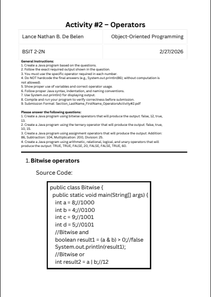
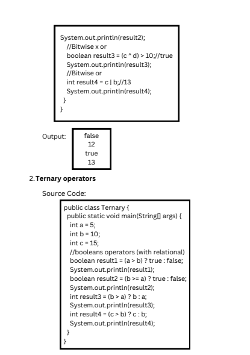
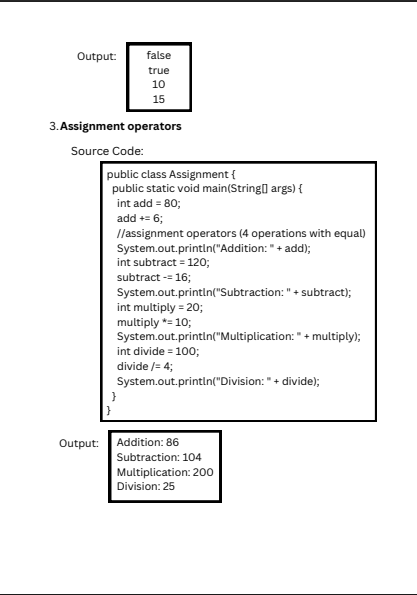
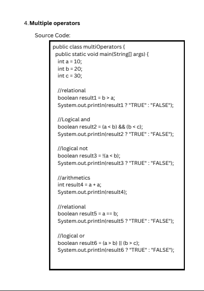
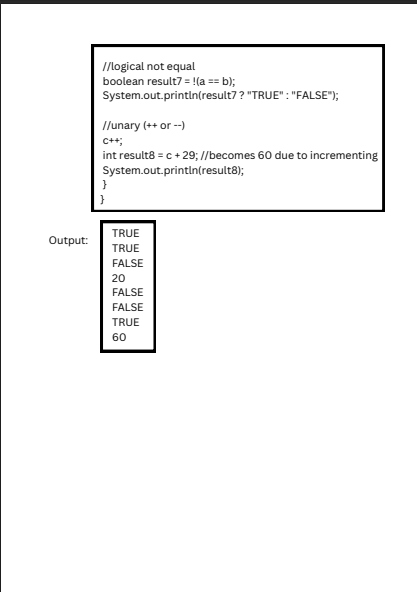
Reflection:
This activity was an excellent drill in understanding Java's operational logic. By strictly adhering to the requirements—such as using bitwise, ternary, and assignment operators to dynamically compute specific outputs—I learned how to manipulate data at a granular level. Avoiding hardcoded answers forced me to truly understand how different operators interact, evaluate, and produce the final boolean or integer values.
An interactive ATM system demonstrating menu-driven programming with balance management, deposits, withdrawals, and fund transfers using do-while loops, switch statements, and nested if-else validation.
import java.util.Scanner;
public class ATMTransferSystem {
public static void main(String[] args) {
//variables to declare
boolean exit = false;
float bal = 7000;
Scanner sc = new Scanner(System.in);
//do while loop handling the main menu
do {
//main menu
System.out.println("===== ATM MENU =====");
System.out.println("1. Check Balance");
System.out.println("2. Deposit");
System.out.println("3. Withdraw");
System.out.println("4. Transfer");
System.out.println("5. Exit");
System.out.println("\nEnter choice: ");
int choice = sc.nextInt();
//switch case controlling choice input
switch(choice) {
case 1:
//view balance(print)
System.out.println("\n+----------------------------------+");
System.out.println("Current Balance: " + bal + " php");
System.out.println("+----------------------------------+\n");
break;
case 2:
//deposit block(loops until correct input,
// exits at 0, repeats at negative values)
while(true) {
System.out.println("\n+--------------------------------------+");
System.out.println("Enter amount to deposit (0 to cancel): ");
float dep = sc.nextFloat();
if(dep == 0) {
System.out.println("+--------------------------------------+\n");
break;
}
else if(dep > 0) {
bal += dep;
System.out.println("You deposit " + dep + " php in your account!");
}
else {
System.out.println("Invalid input. try again");
}
System.out.println("+--------------------------------------+");
}
break;
case 3:
//withdrawal block(loops until correct input,
//exits at 0, repeats at invalid inputs)
while(true) {
System.out.println("\n+--------------------------------------+");
System.out.println("Enter amount to withdraw (0 to cancel): ");
float with = sc.nextFloat();
if(with <= bal) {
if(with <= 2000 && with > 0) {
bal -= with;
System.out.println("You withdraw " + with + " php in your account!");
}
else if(with == 0) {
System.out.println("+--------------------------------------+\n");
break;
}
else {
System.out.println("Invalid input. the maximum withdrawal \nshould be atleast 2000php. please try again");
}
}
else {
System.out.println("Invalid input. Insufficient balance");
}
System.out.println("+--------------------------------------+");
}
break;
case 4:
//transfer block(asks for rec no. and amount,
// validates amount, then prints if successful or not)
System.out.println("\n+-------------------------------------------+");
System.out.println("Enter receiver account number: ");
long rec = sc.nextLong();
System.out.println("Enter transfer amount: ");
float amount = sc.nextFloat();
if(amount > 0) {
if(amount <= bal) {
bal -= amount;
System.out.println("\nTransfer Successful");
System.out.println("Transfered " + amount + " php to receiver no: " + rec);
}
else {
System.out.println("\ntransfer amount must not exceed the available balance. try again");
}
}
else {
System.out.println("\ntransfer amount must be greater than 0. try again");
}
System.out.println("+-------------------------------------------+\n");
break;
case 5:
//choice for exiting the system(declares true in exit variable)
System.out.println("\nexiting program...");
exit = true;
break;
default:
//repeats the main menu printing "invalid input"
System.out.println("invalid input. try again");
continue;
}
} while(!exit); //if 5 is entered exit will be true ending the do while loop
sc.close(); // frees memory allocation
}
}
Program Output & Screenshots:
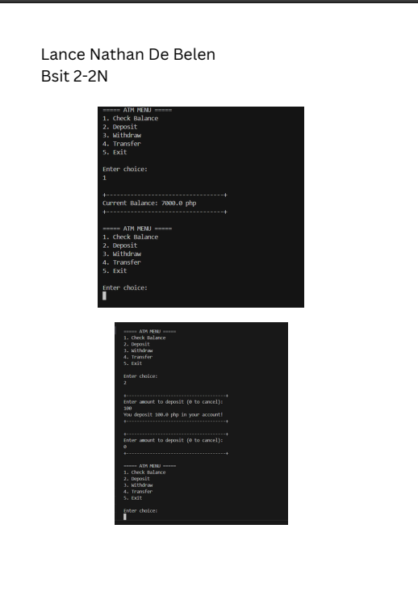
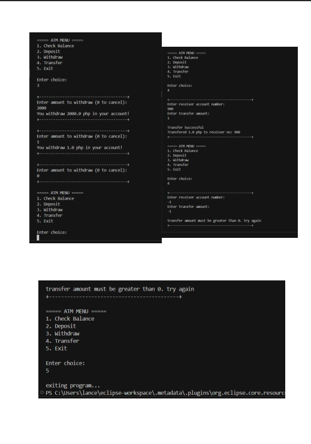
Reflection:
Building the ATM simulator was a fantastic exercise in input validation and state management. I used a do-while loop to keep the main menu active and a switch statement to route the user's choices. The biggest problem-solving challenge was structuring the nested if-else and while loops to trap invalid inputs. For example, ensuring the withdrawal limit didn't exceed 2,000 pesos and that transfers didn't exceed the available balance required careful logical mapping to keep the program running smoothly without crashing.
A comprehensive scholarship eligibility system that evaluates students based on entrance exam scores, interview performance, document verification, and GWA. The program uses nested if-else statements to determine scholarship results and switch statements to categorize scholarship types.
import java.util.Scanner;
public class ScholarshipQualificationSystemDeBelen {
public static void main(String[] args) {
//declares necessary variables
Scanner sc = new Scanner(System.in);
String name;
float gwa;
int es;
int is;
String doc = "";
double ScholarshipScore = 0;
String res = "";
int catnum = 0;
String cat;
//loops until valid input in exam score
// and interview score is achieved
while(true) {
System.out.println("\nEnter student name: ");
name = sc.next();
System.out.println("Enter GWA: ");
gwa = sc.nextFloat();
System.out.println("Enter exam score: ");
es = sc.nextInt();
if (!(es >= 0 && es <= 100)) {
System.out.println("invalid input (1-100). try again");
continue;
}
System.out.println("Enter Interview score: ");
is = sc.nextInt();
if (!(is >= 0 && is <= 100)) {
System.out.println("invalid input (1-100). try again");
continue;
}
sc.nextLine();
System.out.println("Is your document verified? [Verified / Not Verified]: ");
doc = sc.nextLine();
break;
}
//computation for scholarship score that is needed for result
ScholarshipScore = (is * 0.5) + (es * 0.5);
//nested ifs to determine the scholarship result
if(doc.equals("Verified")) {
if(ScholarshipScore >= 90) {
res = "Full Scholarship";
}
else if(ScholarshipScore >= 80) {
res = "Partial Scholarship";
}
else if(ScholarshipScore >= 70) {
res = "Book Allowance";
}
else {
res = "Not Qualified";
}
}
else if(doc.equals("Not Verified")){
res = "Not Qualified";
}
else {
System.out.println("doc input is invalid");
}
//using if to declare numbers that cover specific gwa range
if(gwa >= 1.00 && gwa <= 1.50) {
catnum = 1;
}
else if(gwa >= 1.51 && gwa <= 2.00) {
catnum = 2;
}
else if(gwa >= 2.01 && gwa <= 2.50) {
catnum = 3;
}
//using the required switch case to declare the appropriate category
switch(catnum) {
case 1:
cat = "Academic Excellence";
break;
case 2:
cat = "Merit Scholarship";
break;
case 3:
cat = "Financial Assistance";
break;
default:
cat = "No Scholarship";
}
//printing of the required result
System.out.println("\n+---------------------------------------------+");
System.out.println("Student Name: " + name);
System.out.println("Scholarship Score: " + ScholarshipScore);
System.out.println("Scholarship Result: " + res);
System.out.println("Scholarship Category: " + cat);
System.out.println("+---------------------------------------------+");
sc.close();
}
}
Program Output & Screenshots:
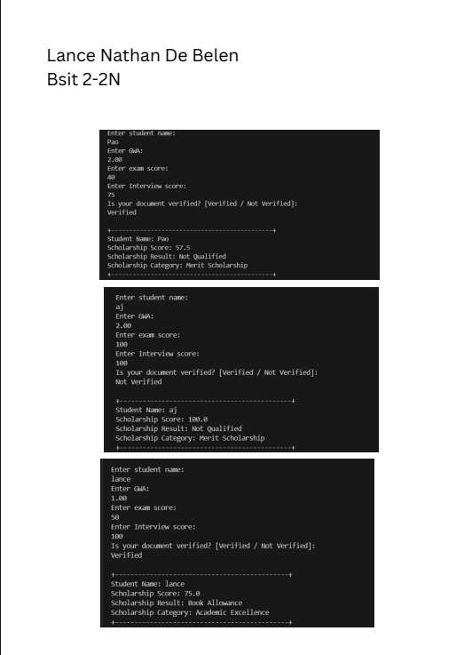
Reflection:
This activity was a great way to practice combining if-else conditions and switch statements in the same program. The biggest hurdle was handling all the different criteria—like document verification, weighted exam scores, and GWA ranges—all at once. I solved this by mapping the floating-point GWA ranges to whole numbers first, making the final switch statement much cleaner to implement.
A practical expense tracking system that demonstrates method declarations with appropriate return types and parameters. The program calculates total expenses, checks budget status, and computes remaining budget using modular void and non-void methods.
import java.util.Scanner;
public class ExpenseTrackerDeBelen {
// 1. A void method that displays the program title
public static void displayTitle() {
System.out.println("=====================================");
System.out.println(" PERSONAL EXPENSE TRACKER ");
System.out.println("=====================================");
}
// 2. A non-void method that calculates the total expenses
// (Enhancement: Added 'utilities' as another expense category)
public static double calculateTotal(double food, double transportation, double other, double utilities) {
return food + transportation + other + utilities;
}
// 3. A non-void method that checks if total exceeds budget and returns a message
public static String checkBudget(double total, double budget) {
if (total > budget) {
return "Warning: You have exceeded your budget!";
} else if (total == budget) {
return "Caution: You have exactly reached your budget limit.";
} else {
return "Great job! You are within your budget.";
}
}
// 4. A void method that displays the total expense and the budget status
public static void displayResults(double total, String statusMessage, double budget) {
System.out.println("\n+-----------------------------------+");
System.out.println("Total Expenses: Php " + total);
// Enhancement: Compute remaining budget
System.out.println("Remaining Budget: Php " + (budget - total));
System.out.println("Status: " + statusMessage);
System.out.println("+-----------------------------------+");
}
public static void main(String[] args) {
// Enhancement: Accept user input
Scanner sc = new Scanner(System.in);
displayTitle();
System.out.print("Enter your total budget: Php ");
double budget = sc.nextDouble();
System.out.print("Enter food expenses: Php ");
double food = sc.nextDouble();
System.out.print("Enter transportation expenses: Php ");
double transpo = sc.nextDouble();
// Enhancement: Extra Category
System.out.print("Enter utilities expenses: Php ");
double utilities = sc.nextDouble();
System.out.print("Enter other expenses: Php ");
double other = sc.nextDouble();
// Call the methods and store the non-void returns
double totalExpenses = calculateTotal(food, transpo, other, utilities);
String status = checkBudget(totalExpenses, budget);
// Display the final output
displayResults(totalExpenses, status, budget);
sc.close();
}
}
Program Output & Screenshots:
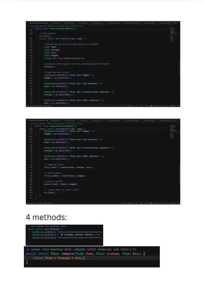
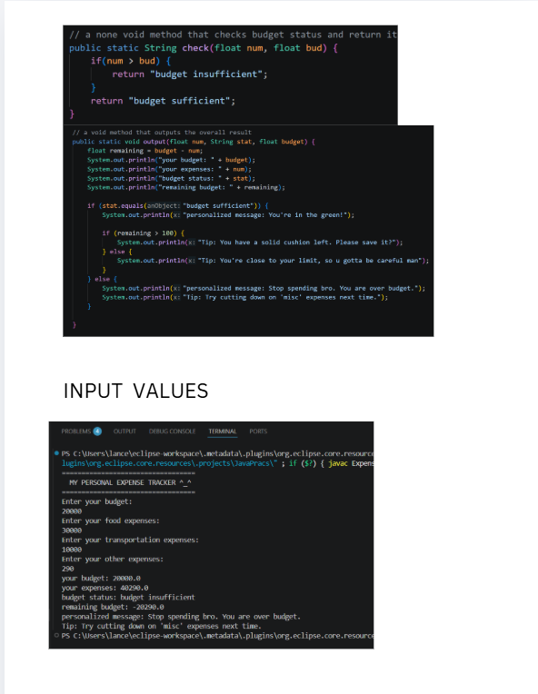
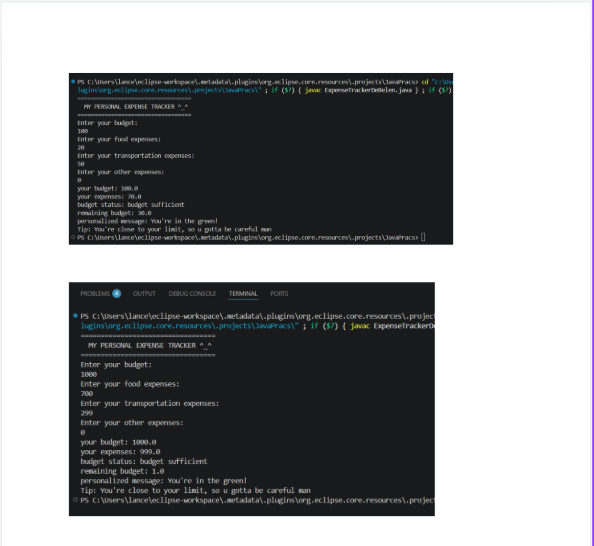
Reflection:
Creating the Personal Expense Tracker solidified my understanding of method declaration and data passing in Java. I learned how to modularize a program by separating tasks into void methods for printing UI elements, and non-void methods with specific parameters for calculating totals and returning status messages. Implementing user inputs and calculating the remaining budget as enhancements really brought the whole concept of dynamic methods together, making my main method look clean and easy to read.
Midterm examination demonstrating comprehensive understanding of OOP concepts:
// Midterm Exam Code - Paste your complete solution here
Reflection:
Preparing for the comprehensive Midterm Examination was a demanding process, but the extensive review ultimately proved to be highly rewarding. The exam rigorously tested my foundational knowledge across several core areas, including the introduction to Java, programming operators, control flow statements, and basic code structure. While the assessment was undeniably challenging, successfully navigating these complex topics validated the hours of study I invested. The difficulty of the exam reinforced the depth of my learning, and I am proud of the solid technical foundation I have built during this term.
Foundational activities completed as part of the midterm requirements:
Throughout the midterm period, my approach to programming evolved from writing simple linear scripts to building modular, object-oriented applications. Mastering method implementation (both void and non-void) was a turning point; it allowed me to keep my main methods clean while delegating logic to specialized functions. Additionally, understanding Java memory management—specifically how the Stack handles references while the Heap stores actual objects—gave me the confidence to manipulate data and object pointers more effectively in complex systems like the ATM Transfer project.
The most significant challenge I faced was ensuring robust input validation across my activities. In projects like the Student Age Analyzer and the Scholarship System, I encountered logic errors where the program would accept out-of-range values. I solved this by implementing nested if-else structures and while-loops to trap invalid data. Debugging these issues taught me the importance of code tracing and helped me master the use of logical operators (&&, ||, !) to create strict, error-proof conditions that protect the integrity of the program's data.